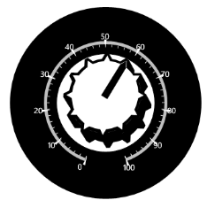

Circular Knob is a value indicator similar to the Circular Gauge Pointer. You can customize the Circular Knob by using different properties such as KnobType, KnobRadius, InnerKnobBrush, OuterKnobBrush, and so on.
The following code example illustrates how to add a Circular Knob to the Circular Gauge.
|
[XAML]
<sfgauge:CircularGauge Height="Auto" Width="Auto" Radius="170" Name="circularGauge1" FrameType="Circular" Margin="3"> <sfgauge:CircularGauge.Scales> <sfgauge:CircularScale x:Name="m_scale" Radius="100" StartAngle="110" GapSweepAngle="320" ScaleBarSize="5" ShadowOffset="5" Minimum="0" Maximum="100" MinorIntervalValue="2" MajorIntervalValue="10" BorderBrush="Gray" Background="Silver" Location="50,50"> <sfgauge:CircularScale.Ticks> <sfgauge:LabelTickSet FontSize="13" Background="Silver" Name="m_label" TickPlacement="Outside" VerticalContentAlignment="Bottom" DistanceFromScale="0"/> <sfgauge:MarkTickSet TickHeight="14" TickShape="Triangle" TickStyle="MajorTick" Name="majorLabelTick" TickWidth="4" Background="Silver"/> <sfgauge:MarkTickSet TickHeight="4" TickWidth="1" TickStyle="MinorTick" Name="minorTick" Background="Silver" TickPlacement="Inside"/> </sfgauge:CircularScale.Ticks> <sfgauge:CircularScale.Pointers> <sfgauge:CircularKnob KnobRadius="80" KnobValue="60" Name="knob" KnobType="Cog" EnableMouseMove="False" Background="Red" InnerKnobBrush="Black" OuterKnobBrush="White"> </sfgauge:CircularKnob> </sfgauge:CircularScale.Pointers> </sfgauge:CircularScale> </sfgauge:CircularGauge.Scales> </sfgauge:CircularGauge>
|
|
[C#]
CircularGauge circulargauge1 = new CircularGauge(); PivotItem pivotitem = new PivotItem(); pivotitem.Content = circulargauge1; LayoutRoot.Children.Add(pivotitem);
CircularScale c_scale = new CircularScale(); c_scale.Radius = 110; c_scale.StartAngle = 120; c_scale.GapSweepAngle = 300; c_scale.ScaleBarSize = 10; c_scale.Location = new Point(50, 50); c_scale.ShadowOffset = 5; c_scale.ShadowOffset = 5; c_scale.Minimum = 0; c_scale.Maximum = 100; c_scale.MinorIntervalValue = 2; c_scale.MajorIntervalValue = 10; c_scale.Background = new SolidColorBrush(Colors.LightGray); c_scale.BorderBrush = new SolidColorBrush(Colors.Blue); c_scale.BorderThickness = new Thickness(0.5); circulargauge1.Scales.Add(c_scale);
// Adding Pointer. CircularKnob c_knob = new CircularKnob(); c_knob.Radius = 50; c_knob.KnobType = KnobTypes.Cog; c_knob.InnerKnobBrush = new SolidColorBrush(Colors.Black); c_knob.OuterKnobBrush = new SolidColorBrush(Colors.White); c_knob.EnableMouseMove = True; c_scale.Pointers.Add(c_knob); |

Figure 38: Circular Knob